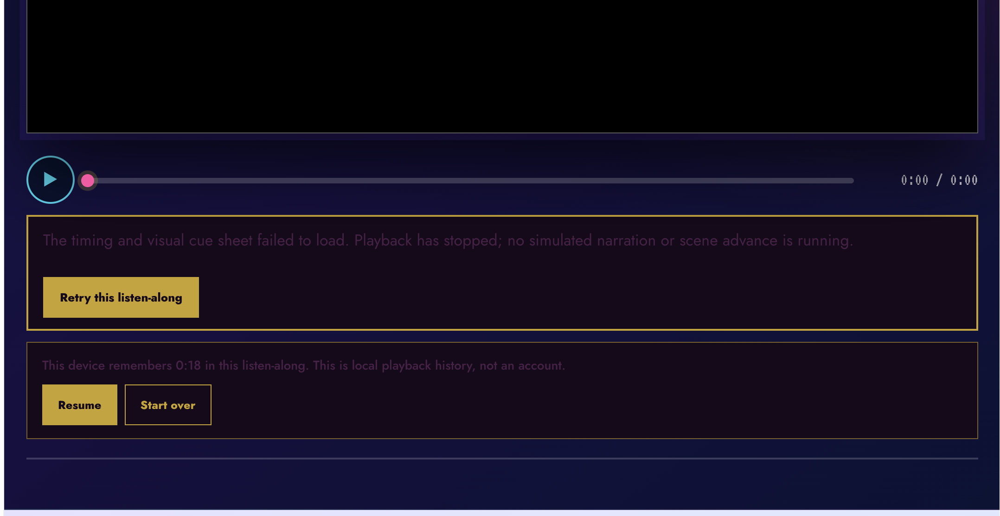
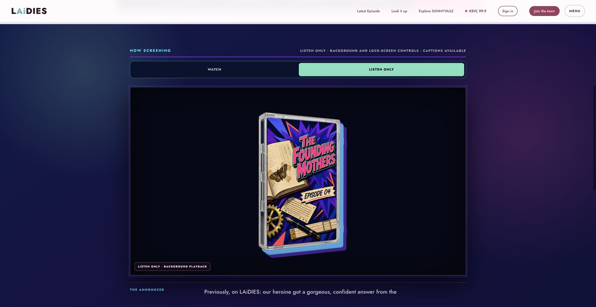
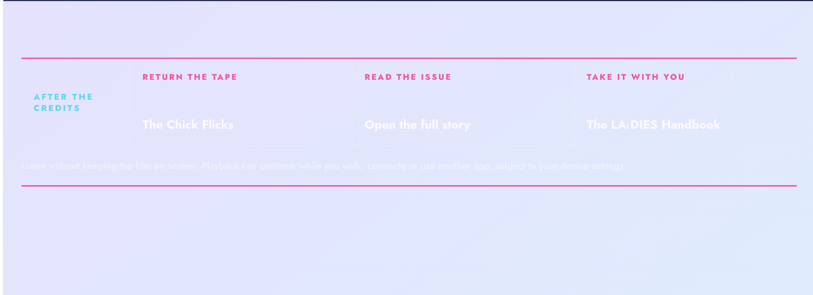
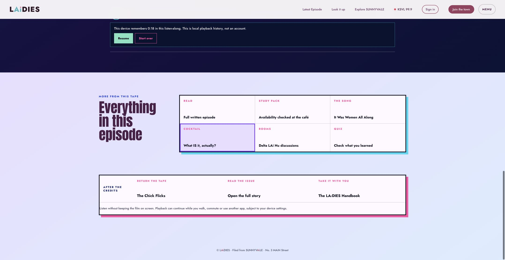

Rejected state and corrected implementation
Rejected: black void, unreadable failure, competing resume
Corrected: approved VHS remains the player identity
Rejected: pale text disappears on pale background
Corrected: direct episode links plus dark-on-cream footer